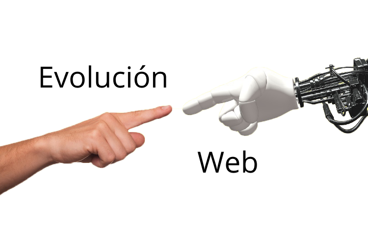

Las animaciones pueden hacer que la navegación por una página web sea más atractiva y agradable para los usuarios. Los efectos visuales, como transiciones suaves y elementos que responden al movimiento del cursor, pueden hacer que la experiencia de usuario sea más dinámica y atractiva.
Las animaciones pueden ayudar a captar la atención del usuario y dirigirla hacia elementos importantes de la página, como llamadas a la acción o información destacada. Los movimientos sutiles o llamativos pueden destacar ciertos contenidos y guiar al usuario a través del flujo de la página.
Las animaciones son una herramienta efectiva para explicar conceptos complejos o procesos de una manera visual y comprensible. Por ejemplo, mediante animaciones se pueden mostrar visualmente los pasos de un proceso, el funcionamiento de un producto o la relación entre diferentes elementos.
HTML, CSS y JavaScript permiten crear animaciones interactivas que responden a las acciones del usuario, como hacer clic, desplazarse o pasar el cursor sobre elementos específicos. Esta interactividad puede aumentar la participación del usuario y mejorar la experiencia general en el sitio web.
En un mundo lleno de sitios web estáticos y similares, las páginas web animadas pueden ayudar a diferenciar una marca o un producto. Las animaciones personalizadas y creativas pueden destacar y hacer que un sitio web sea memorable para los usuarios.
Las animaciones en las páginas web pueden ser diseñadas y optimizadas para funcionar de manera efectiva en dispositivos móviles. Esto puede mejorar la experiencia del usuario en smartphones y tablets, donde el espacio es limitado y el comportamiento táctil es común.